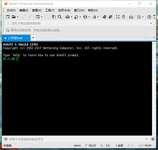
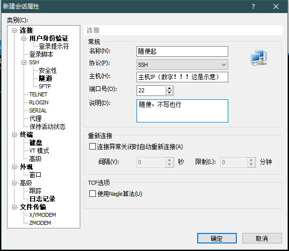
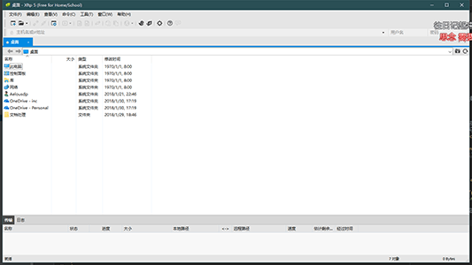
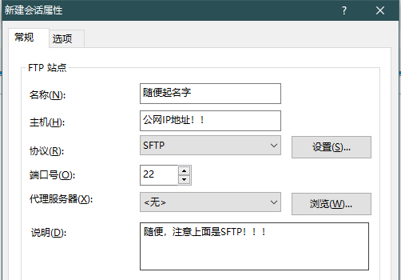

大家好~，我今天给大家分享一下，我个人博客的搭建过程（二）。
废话不多说，大家如果有疑问，QQ:806267856询问。
当我们拥有域名，空间并备案解析之后，我们就可以访问自己的云服务器了。可是问题来了。云服务器上面啥都没有，该怎么办呢？我采用的方法是利用一键式部署web环境。
原因：
对我个人来说，暂时没必要对web环境的部署研究的那么深，部署好一个先让我自己有个学习的动力，是目前比较有效率的方式。
采用的工具：
阿里云linux一键安装web环境(含视频教程) ，在阿里云官网找到的，是在摸索方法的时候一个博主推荐的，我也放上链接了，不知道算不算打广告。貌似就一个口香糖钱。同时呢，这个东西貌似是买断的。买一次可以永久用，还是挺划算的。不想花钱的朋友可以直接搜一下，网上也是一大堆，比较不好的就是教程太驳杂，我也是花了很久才总结出一个比较好理解的方式。免费的链接就不给了，不推荐。
买完之后，点击阿里云官网右上角控制台，然后再控制台中左边选择栏选择最后一项云市场，找到买的产品，然后下载就好了。下载的文件解压后，应该是一个叫做sh-1.x.x的文件夹。这时候我们应该拿这个文件夹怎么办呢。我们要将这个文件夹拷入到我们的服务器中，然后安装。那么这时候就需要两个特殊的软件了。Xshell和Xftp。
Xshell和Xftp：
Xshell的下载链接： Xshell（端模拟软件） Xftp的下载链接： Xftp（用于上传文件到 linux 服务器）
两个链接均是百度软件中心的，嘿嘿，普通下载就好，没什么问题，我用的就是这个。下载后的图标如图所示：
接下来需要用Xshell和Xftp连接到服务器。在第一节我们说过一定要用linux系统啊~原因就在这里啦。，打开Xshell界面如下所示： 然后点击文件->新建进入如下界面： 按照我图中提示写，尤其注意主机填的是你的 公网IP地址，可以在阿里云你的控制台里面查看，密码啥的你自己知道，就是买主机的时候自己设置的那个。如果忘了那就重新初始化一下主机，重新设置一下密码。
然后打开Xftp，界面如下所示： 同样，文件->新建进入连接配置界面： 按照图中提示填写即可， 注意是SFTP！！！密码同Xshell，点击连接。这时，我们应该已经成功的通过这两个软件将我们的电脑和我们在阿里云的服务器连接了。撒花~~~不完结~@^_^@
web部署：
首先要用Xftp软件，将我们下载下来的那个sh-1.x.x拷贝至root文件夹下，默认打开应该就是这个文件夹。左边显示的是本地文件，找到下载的文件，拖动到右边即可。如图：
 然后我们需要利用Xshell控制我们的服务器安装这个sh-1.x.x（我的是1.5.5，所以之后以1.5.5为例） 输入：
然后我们需要利用Xshell控制我们的服务器安装这个sh-1.x.x（我的是1.5.5，所以之后以1.5.5为例） 输入：
chmod –R 777 sh-1.5.5
cd sh-1.5.5
./install.sh